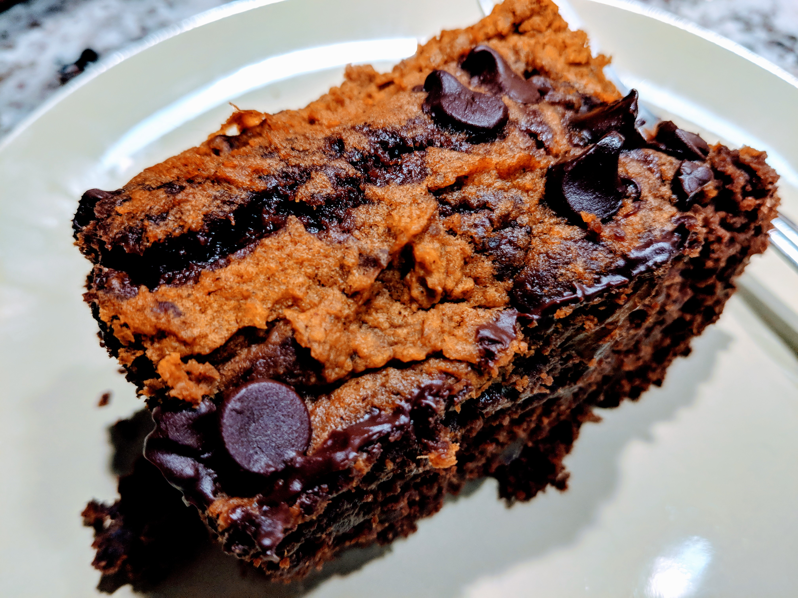

Pumpkin Brownie

Vegan pumpkin brownie is the best autumn recipe ever. Serve with vegan coconut whipped cream or pumpkin seeds.
Ingredients
Pumpkin Swirl:
- ¾ cup pumpkin puree
- 1½ tablespoons coconut oil
- 3 tablespoons orange juice
- 1 pinch ground nutmeg
- 1 pinch ground cinnamon
Brownie
- 5 tablespoons hot water
- 3 tablespoons flaxseed meal
- 1 cup almond flour
- 6 tablespoons white sugar
- 3 tablespoons orange juice
- 1½ tablespoons coconut oil
- 1 tablespoon vanilla extract
- ⅔ cup dark chocolate, melted
- ⅓ cup chopped pecans
- 1 teaspoon baking powder
- 1 pinch salt
- 1 pinch ground black pepper